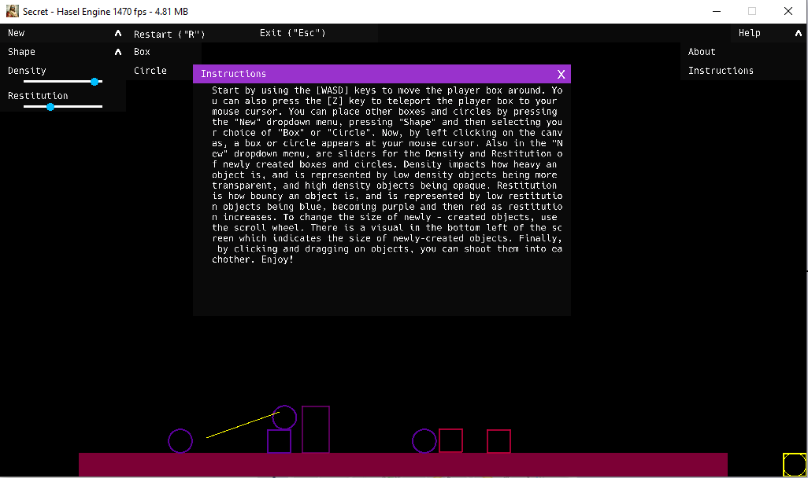
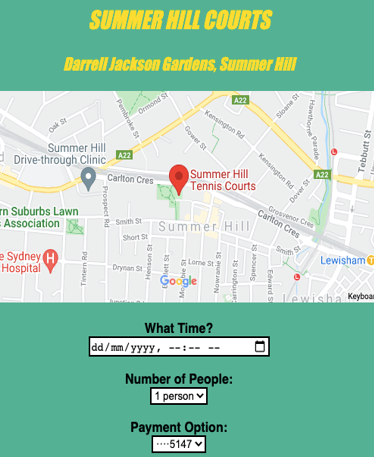

Home
Shawaiz:
Rrevised copy:
15 Puzzle
Original:
https://sbh-2806.github.io/15-Puzzle/
The old 15 piece puzzle where you have to order the tiles. Sounds easy?? Don't waste too much time as some of the randomly generated puzzles are not solvable.
Folio:
12A3-Doc-B_Shawaiz
GitHub Repository:
https://github.com/Sbh-2806/15-Puzzle
Shawaiz.Bhatti@education.nsw.gov.au
________________________________________
Thomas:
https://wouga1.github.io/Masyu/
Masyu is played on a rectangular grid of squares, some of which contain circles; each circle is
either "white" (empty) or "black" (filled).
The goal is to draw a single continuous non-intersecting loop that properly passes through all
circled cells.
https://en.wikipedia.org/wiki/Masyu

Folio:
12A3-Doc-V_Tom
GitHub Repository:
https://github.com/Wouga1/Masyu
Thomas.Varvell@education.nsw.gov.au
________________________________________
Haitao:
No hosted website.
Chess, both normal and "Really Bad Chess" where you may have 3 Queens and 2 bishops!
Due to the complexity, this game has to be setup and run within the "IntelliJ" IDE. The image below shows that a player can see the possible moves their piece can make:

Within IDE environment, it's possible to see the modular construction and the menu, allowing play with either humans or the computer:
Folio:
12A3-Doc-W_Haitao
GitHub Repository:
https://github.com/Hayden-666/JChess
Haitao.Wang1@education.nsw.gov.au
________________________________________
Noah:
https://noahny.github.io/blackjack/
Play Blackjack here - while there are some problems with the screen elements, the code under the bonnet is very sophisticated:

Folio:
12A3-Doc-Y_Noah
Gantt Chart:
12A3-Doc-Y_Noah-Gantt
Log:
12A3-Doc-Y_Noah-Log
GitHub Repository:
https://github.com/NoahNY/blackjack
Noah.Young2@education.nsw.gov.au
________________________________________
Sung Ji
https://bwbsungjicho.github.io/discord-bot/
(can be run with Discord)
This is best viewed by demonstration.
If you're chatting on Discord and want to plan an event, chances are this "bot" will do it for you.
It saves time when creating a range of events.
The complexity behind this is easy to miss:
Folio:
12A3-Doc-Ch_SungJi
GitHub Repository:
https://github.com/bwbsungjicho/discord-bot
Sung.Cho34@education.nsw.gov.au
________________________________________
Liam
https://lemone-lime.github.io/Secret/ (Unzip v2 and run secret.exe)
A Physics Engine which emulates Newtonian laws of collisions with gravity. Objects have variable area and mass and can be shot in an Angry Birds style.

Folio:
12A3-Doc-H_Liam
GitHub Repository:
https://github.com/Lemone-Lime/Secret
Liam.Hall4@education.nsw.gov.au
________________________________________
Sidharth:
https://sidharthkn.github.io/VenueVulture/
Need to book that tennis court or other venue - try this app which links with maps to allow a booking.

Folio:
12A3-Doc-K_Sid
Gantt chart:
12A3-Doc-K_Sid-Gantt
GitHub Repository:
https://github.com/sidharthkn/VenueVulture
Sidharth.KannegalNarayanan@education.nsw.gov.au
________________________________________
Callum:
https://jackryko.github.io/JSort/
(if you don't have the Java runtime, it can be downloaded from:
https://java.com/en/download/windows_manual.jsp)
The SDD curriculum involves studying the standard algorithms for 3 types of sort.
This site demonstrates the sorts and the logic behind them.
Folio:
12A3-Doc-M_Callum
Demo:
12A3-Doc-M_Callum-Demo
GitHub Repository:
https://github.com/jackRyko/JSort
Callum.McCracken@education.nsw.gov.au
________________________________________
Maxim:
No web version as download is complex
Musos may have a midi file of their last performance. This app analyses the file, identifies the pitch and timing of notes and identifies if simultaneous notes are chords, It then extracts data from the file which can play on a piano simulation.
Folio:
12A3-Doc-N_Maxim
GitHub Repository:
https://github.com/mnechip/midi-reader-module
Maxim.Nechiporenko1@education.nsw.gov.au
________________________________________
Finnegan:
github.io/CodingCliques/NodeMapProg/
Many of the Blackwattle student population responded to a survey and listed their 5 closest friends. This data was translated into an animated network map with nodes and links.
Hit "D" to see gendered or racial groups.

Folio:
12A3-Doc-O_Finn-Log
GitHub Repository:
https://github.com/abandw1/CodingCliques
Finnegan.OConnor@education.nsw.gov.au
________________________________________
Ben:
Steps for setup:
Setup and Help
This game is a rogue-like RPG (role playing game). The primary concept behind this development is to provide a game with a customisable attack system.
Complex algorithms were written in Python, displayed with PyGame, then wrapped into an executable file. Use WASD to move Up, Left, Down or Right respectively
Folio:
12A3-Doc-P_Ben
GitHub Repository: https://github.com/B3NJP/FinalSDDProject
Benjamin.Pearcy@education.nsw.gov.au
________________________________________
Anass:
https://anasstalab.github.io/Whack-A-Mole/
A Whack a Mole game - it has problems but Anass will demonstrate and the story is interesting.
Folio:
12A3-Doc-T_Anass
GitHub Repository:
https://github.com/AnassTalab/Whack-A-Mole
Anass.Talab@education.nsw.gov.au
________________________________________
Asher:
https://mrsmokedsalmon.github.io/
(the executable doesn't work without the surrounding files)
V1.6 Zip:
MrSmokedSalmon.github.io/archive/refs/tags/V1.6.zip
Tic Tac Toe or Noughts and Crosses. Executable doesn't seem to be working.
Folio:
12A3-Doc-Ca_Asher
GitHub Repository:
/MrSmokedSalmon.github.io
Asher.Carey1@education.nsw.gov.au
________________________________________
We were just learning to use GitHub in these days, but the projects are very innovative:
We were just learning to use GitHub in these days, but the projects are very innovative:
Most students worked from the main template and had varying degrees of completion for the final modules:
Description of the Year 11 2021 Binary puzzle project:
Project + 10 versions
IDE's and Website editors used for the Blackwattle Bay projects you see here
Test page
Both IDE's (Integrated Development Environments) described below allow a split screen,
where typing in "design" view automatically creates "source"
code on the other side. Both show the file structure - "Solution Explorer"
in VS (MS Visual Studio) and "Local Files" in DW (Adobe Dreamweaver).
The first task in Year 11 is using 5 languages to modify versions of a simple app to add 3 numbers. It can be seen at:
https://bwattle.github.io/Add3_JS-Pas-Py-VB-VBA/
Because it edits, Python, JavaScript, HTML and Visual Basic, the preferred editor
is Visual Studio (VS) community (free to anyone), but this doesn't work on
Mac. VS interacts well with GitHub and provides good support for formatting and
error checking:
Students wishing to preparation for year 11 can download the COMMUNITY version of
VS from:
https://visualstudio.microsoft.com/downloads/
(the download will take over an hour and will use about 25GB)
Choose these 4 components - ASP.net, Python, .NET development and Universal Windows
Platform:
Dreamweaver (DW), a great editor for HTML and JavaScript is free for students under
the DET licencing for Adobe. It works on Mac and PC, interacts well with GitHub,
has a great "Live View" but has different error checking standards to VS:
In year 11, students will code in Pascal with the Pascal XE IDE. The IDE
can be downloaded from:
https://sourceforge.net/projects/pascalxe
The IDE will look like this:
While often we will edit Python in Visual Studio, the light weght IDLE editor
will be available without a separate download of Python. Just right click on the
file and choose "Edit with IDLE":